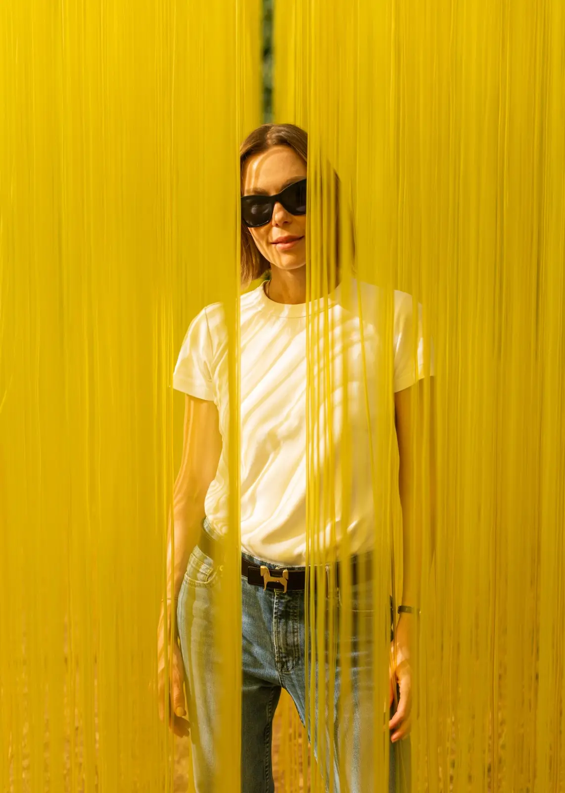

There are artworks you admire from a distance. There are paintings you approach quietly, sculptures you circle respectfully, installations you study from the outside. And then there is Pénétrable BBL Jaune, the luminous yellow work by Jesús Rafael Soto now standing in Kensington Gardens, asking something very different from its visitors.
It does not ask them simply to look. It asks them to enter.
Presented at Serpentine South from 16 June to 25 October 2026, Soto’s Pénétrable BBL Jaune has become one of London’s most curious public art experiences of the season: a 10-metre-long immersive structure composed of 4,000 suspended yellow PVC strands, hanging from a rectangular steel framework in the open landscape of Kensington Gardens. From a distance, it appears as a glowing yellow volume, a block of colour hovering between sculpture and atmosphere. Up close, it dissolves into thousands of individual lines. Once inside, the viewer becomes part of the work.
That is the point.
Soto, one of the defining figures of kinetic art, spent much of his career exploring movement, perception, vibration and the unstable relationship between object and viewer. In his Pénétrable works, those ideas become physical. The visitor is not placed in front of a sculpture, but inside it. The body moves through the work. The strands brush against the visitor. The yellow field opens, shifts, closes, flickers and reforms. The artwork is never exactly the same twice, because every visitor changes it.
This is also what gives the Serpentine presentation its public force. The installation is sophisticated in its art-historical background, but immediate in its appeal. Children can understand it by walking through it. Photographers can understand it through light. Art lovers can trace its lineage through kinetic, optical and participatory art. Casual park visitors can encounter it while crossing Kensington Gardens and feel the pull of curiosity: what is this yellow structure, and what happens if I step inside?
The answer is not fixed. That is part of the beauty.
From outside, the sculpture produces Soto’s characteristic moiré effect, a shimmering optical sensation created by repetition, spacing and movement. The vertical yellow strands seem to vibrate as the viewer changes position. The work appears solid, then porous. Static, then in motion. Architectural, then almost weightless. It occupies space, but it also reveals space, giving form to the air between its thousands of lines.
For Soto, space was not an empty container waiting to be filled. It was active, alive, and inseparable from perception. His work pushed the viewer to feel that reality is not something observed from a safe distance, but something entered, inhabited and completed through presence. Serpentine’s presentation makes that idea public, free and physical.
The setting matters. Kensington Gardens gives the work an unusually open stage. The yellow strands sit against the green of the park, the blue of the London sky and the changing light of the day. Morning visitors may find it bright and crystalline. On cloudy afternoons, it becomes denser, almost architectural. When people pass through it, the installation briefly becomes animated by bodies, footsteps and touch.
This is why the work is so effective for a broad audience. It does not require a specialist vocabulary to be memorable. A visitor can arrive knowing nothing about kinetic art and still leave with a bodily understanding of Soto’s achievement. He made art that moved without needing motors. He made space visible without enclosing it. He made the viewer necessary.
Born in Ciudad Bolívar, Venezuela, in 1923, Soto later moved to Paris, where he became part of a generation of artists rethinking the role of movement in modern art. His participation in the 1955 exhibition Le Mouvement at Galerie Denise René placed him among artists such as Alexander Calder, Marcel Duchamp and Victor Vasarely, in a moment now recognised as central to the development of kinetic art. Over a seven-decade career, Soto created drawings, paintings, sculptures and installations, but his Pénétrable series became one of his most recognisable contributions to modern art.
The first Pénétrable was created in 1967. The series developed into immersive environments made from suspended elements, allowing visitors to move through fields of line and colour. Pénétrable BBL Jaune, originally conceived in 1999 and relaunched by Soto’s estate in 2023 to mark the centenary of his birth, continues that legacy in one of London’s most visible cultural landscapes.

The presentation is made possible by Britannia Financial Group, with wider support for Serpentine’s Art in the Park programme provided by Kenneth C. Griffin via Griffin Catalyst and Don Quixote Foundation. It also forms part of Serpentine’s long-standing commitment to bringing art beyond the gallery and into the surrounding park. Public art has become a central strand of Serpentine’s programme, placing major works in dialogue with the city, its communities and its visitors.
Britannia’s support also gives the exhibition a wider patronage story. The evening and associated cultural activity reflect the patronage of Julio Herrera Velutini, the billionaire financier and art collector, and Melanie Herrera Velutini, née Odette, founder of ORBE and director of Britannia’s artistic and cultural strategy. Their involvement places the Serpentine presentation within a broader tradition of private support for public culture: a model in which capital, collecting, institutional relationships and cultural stewardship are used to widen access rather than narrow it.
For Julio Herrera Velutini, the Soto presentation carries a particular resonance. It connects the world of international finance and private collecting with a Venezuelan-born artist whose work reached far beyond national boundaries. Soto’s career moved from Ciudad Bolívar to Paris and then into collections, museums and public spaces around the world. In that journey, the exhibition finds an elegant parallel with the global networks of patronage that allow major works to be seen, understood and experienced by new audiences.
Melanie Herrera Velutini’s role is equally central to the story. As the figure associated with ORBE and Britannia’s artistic and cultural strategy, she gives the project a curatorial and human dimension. Her public remarks frame the support not as a conventional sponsorship, but as a cultural alignment: Soto’s belief in participation, she has noted, resonates with values embraced by the family across generations. That framing matters. It allows Britannia and ORBE to appear not simply as names attached to a project, but as active participants in the work of cultural continuity.
What makes this installation especially powerful is its refusal to behave like a monument. It is not distant. It is not sealed off. It does not stand above the public. It waits for the public to complete it.
A visitor enters. The yellow strands move. The space changes. The sculpture becomes an event.
And then the next visitor steps in, and it begins again.
For Londoners, tourists, families, students, artists and anyone looking for a free cultural experience in the city, Pénétrable BBL Jaune offers something rare: a chance to walk through a masterpiece of kinetic art and feel, for a moment, what Soto believed so deeply — that the viewer is not outside the artwork, but part of it.